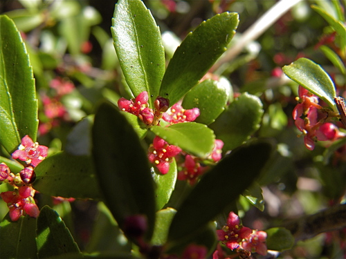
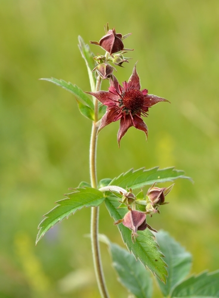
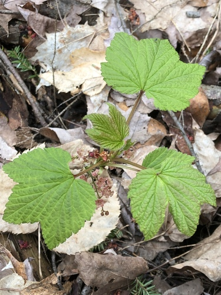

Grasses and sedges are grouped separately: they are wind-pollinated, so what you see is the seed head.
6 plants



 Nick Block, some rights reserved (CC BY), uploaded by Nick Block")
 Alan Rockefeller, some rights reserved (CC BY), uploaded by Alan Rockefeller")